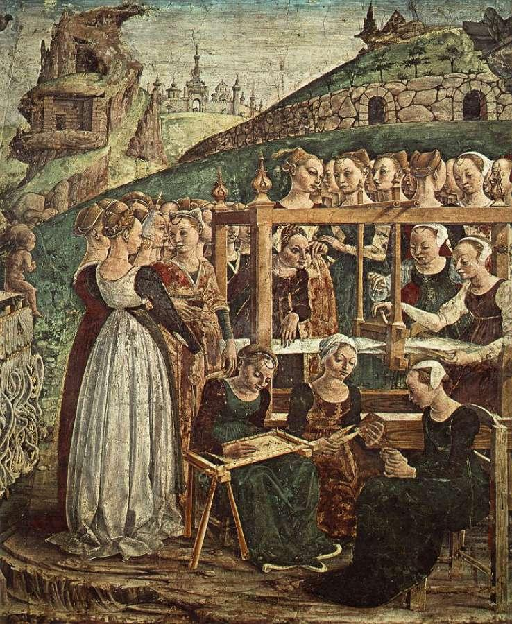
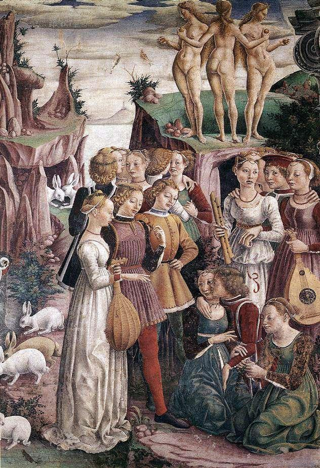
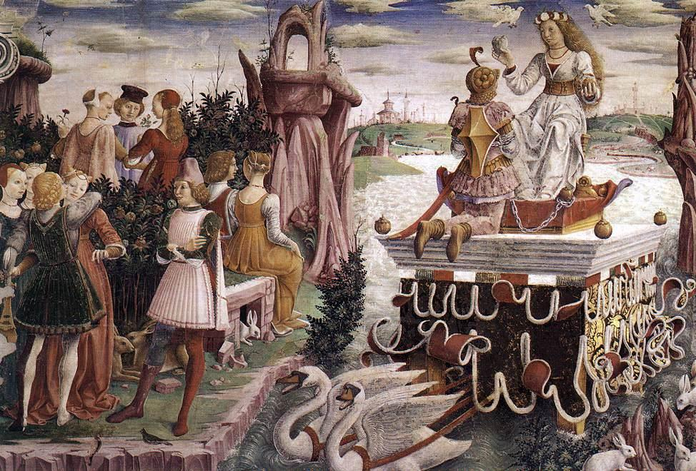

Copyright Michel Galiana 01.04.2006 (c) (r) All rights reserved |
Transl. Christian Souchon 01.04.2006 (c) (r) All rights reserved |

Note :
|
Le Cycle des mois du Palais Schifanoia ("Qui répugne à l'ennui") à Ferrare fut peint par les meilleurs artistes de cette ville en 1470, pour célébrer la prochaine investiture du duc de Modène et Reggio, Borso d'Este, comme Duc de Ferrare. Il occupe les 4 murs de la salle et présente pour chaque mois, trois peintures "a fresco" ou "a secco" représentant de haut en bas, le triomphe d'un dieu ; un signe zodiacal accompagné de trois personnages, les "décans", sur la bande centrale; une scène de la vie et du gouvernement de Borso d'Este faisant ressortir la prospérité que les Ferrarais pouvaient attendre de son règne: un véritable âge d'or. Seules 7 des 12 scènes (mars à septembre) restent lisibles après la restauration de l'oeuvre en 1820-1840. Outre le message politique, elles célèbrent le caractère sacré de l'ordre cosmique et des tâches humaines qu'il régit. Le poème de Michel a trait à plusieurs tableaux à la fois, exécutés par le peintre Francesco Del Cossa: - les fuseaux sont ceux des Parques. Peut-être sont-ce les trois dames -dont l'une semble porter un fuseau- debout à gauche des trois brodeuses et trois tisserandes du Triomphe de Minerve: mois de Mars. - la course d'Apollon a trait soit au Triomphe d'Apollon: mois de Mai par Del Cossa, soit à l'ensemble du cycle; - le fleuve qui coule le long de personnages immobiles orne le triomphe de Vénus: mois d'Avril. La déesse trone sur un char flottant tiré par deux cygnes. Mars est à genoux devant elle, enchaîné. Sur les rochers se tiennent les trois Grâces. Les lapins qui pullulent symbolisent la fécondité qu'engendre l'amour. Le fleuve s'éloigne vers des villes lointaines à peine esquissées; - C'est à ce même Triomphe de Venus qu'appartient le groupe de cinq chanteuses dont Michel, dans une formulation peut-être inspirée de Nerval (Artémis, "La treizième revient..."), affirme que la cinquième est destinée à mourir. C'est la seule à ne pas être accompagnée, enlacée ou embrassée ("désir qui connaît sa faim") par un compagnon masculin - que Vénus a éloigné de la guerre en enchaînant le dieu Mars - et elle est agenouillée les mains jointes. Ce pourrait être aussi, sur l'autre rive, la jeune dame assise à côté de son compagnon face à un étrange rocher surmonté d'un non moins étrange monument qui ressemble à une "bière" supportant un tabernacle. Tout comme, d'ailleurs, le char flottant de Vénus qu'on dirait recouvert d'une housse mortuaire battue par le vent. Il est de fait que les personnages qui entourent les chars de triomphe des dieux semblent des spectres figés dans une immobilité "inexorable" (que n'atteint la prière) qu'accentue, dans ce cycle, l'absence de profondeur des paysages. Michel pressent à quel point triomphe dans ces "Triomphes", celle que l'on avait fait défense aux peintres de Ferrare de représenter: la Mort. On peut rapprocher ce poème de Ludovicus et de Un square à Madrid. |
The Cycle of the Months of Palazzo Schifanoia ("Dodge-Boredom") in Ferrara was painted by the best artists of that city in 1470, to celebrate the upcoming inauguration of the Duke of Modena and Reggio, Borso d'Este, as Duke of Ferrara. It occupies the 4 walls of the room and presents for each month, three paintings "a fresco" or "a secco" representing from top to bottom, the triumph of a god; a zodiac sign accompanied by three characters, the "decans", on the central strip; a scene from the life and government of Borso d'Este highlighting the prosperity that the Ferrarese could expect from his reign: a true golden age. Only 7 of the 12 scenes (March to September) remain legible after the restoration of the work in 1820-1840. In addition to the political message, they celebrate the sacred character of the cosmic order and the human tasks it governs. Michel's poem relates to several paintings at once, executed by Francesco Del Cossa: - the spindles are those of the Fates. Perhaps these are the three ladies - one of whom seems to be wearing a spindle - standing to the left of the three embroiderers and three weavers in the Triumph of Minerva: month of March. - the journey of Apollo relates either to the Triumph of Apollo: month of May by Del Cossa, or to the entire cycle; - the river which flows alongside immobile figures adorns the triumph of Venus: month of April. The goddess sits on a floating chariot pulled by two swans. Mars is kneeling in front of her, and is chained. On the rocks stand the three Graces. The swarming rabbits symbolize the fertility that the goddess of love engenders. The river moves away towards distant towns barely outlined; - It is to this same Triumph of Venus that the group of five singers belongs, of which Michel, in a formulation perhaps inspired by Nerval (Artémis, "The thirteenth comes back..."), affirms that the fifth is destined to die. She is the only musician girl not to be accompanied, embraced or kissed ("lust growing to greediness") by a male companion - that Venus kept away from war by chaining the god Mars - and she is kneeling with her hands clasped. It could also be, on the other bank, the young lady sitting next to her companion facing a strange rock surmounted by a no less strange monument which resembles a "bier" (grave) supporting a tabernacle. As does, moreover, the floating chariot of Venus which looks like it was covered in black hangings beaten by the wind. It is a fact that the characters surrounding the triumphal chariots of the gods seem spectres frozen in an "inexorable" immobility ("despite dire entreaty") which is accentuated, in this cycle, by the absence of depth in the landscapes. Michel senses to what extent an entity pervades these "Triumphs", though the Ferrara painters had been without doubt urgently directed to keep it out of them: Death. We may parallel this poem with Ludovicus and A public garden in Madrid. |
Listen to 'Schifanoia' in English